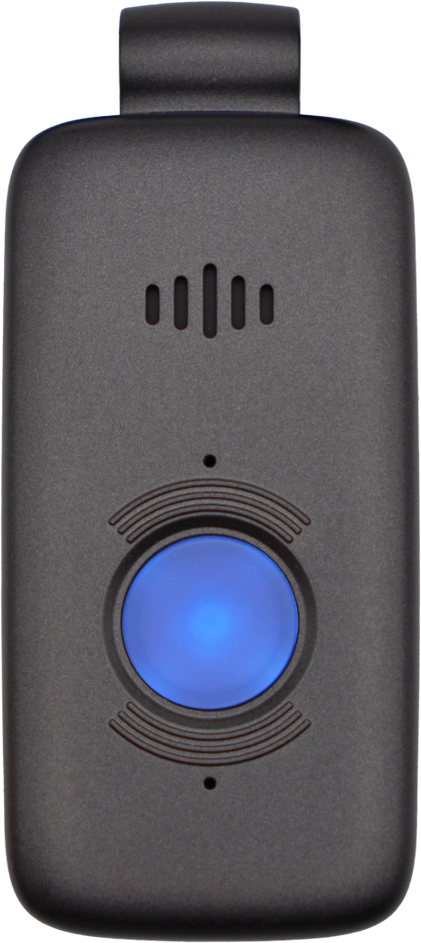
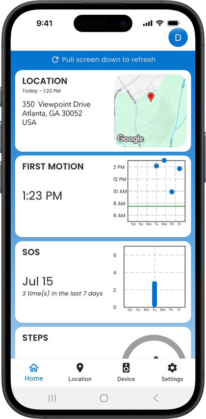
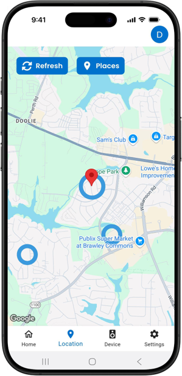

Products
Both devices connect you to 24/7 monitoring by Becklar. Pick the one you would rather wear.

Belle X
A device you wear on a lanyard or belt clip, with fall detection, first motion alerts and a step tracker.
$110 setup
$45 per month

Belle W
A lightweight wrist-worn device with fall detection capabilities.
$130 setup
$45 per month
Caregiver app: $5 per month
A personalized app for family and caregivers. See the device's activity and location from your phone.
- Live location on a map
- First motion of the day
- SOS history and step count


Compare
| Belle X | Belle W | |
|---|---|---|
| Worn | Lanyard or belt clip | Wrist |
| Battery | Up to 16 days | Up to 7 days |
| Location | GPS, WiFi, cellular | WiFi, cellular |
| Fall detection | Yes | Yes |
| Caregiver app | $5/month | $5/month |
| Water resistance | IP67, shower-safe | IP67, shower-safe |
| Setup / monthly | $110 / $45 | $130 / $45 |
Common questions
Do I need a landline or home phone?
No. Belle devices use built-in cellular technology. You do not need a landline or personal cell phone to operate the device.
Does the device contact 911 directly?
The device connects to a professional emergency monitoring operator. The operator can assess the situation and coordinate appropriate assistance, including emergency services when needed.
Does fall detection work 100% of the time?
No. Automatic fall detection is an additional safety feature, not a guarantee. Some falls may not be detected, and certain movements may trigger false alarms. Always press the emergency button if you need help and are able to do so.
How long does the Belle W battery last?
Battery life can last up to approximately 7 days per charge, depending on settings and usage. Some configurations may require more frequent charging.